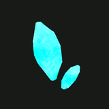
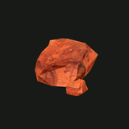
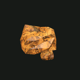
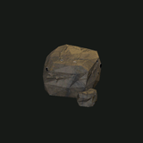
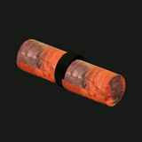
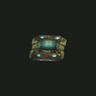
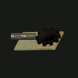
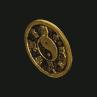
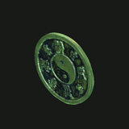
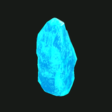

Un cristal de luz fría que brilla solo e ilumina las cuevas donde crece. Raro y frágil; los operadores llevan fragmentos como lámparas de emergencia, y nadie explicó del todo de dónde sale la luz.
Se encuentra enCúmulos de lumenita cerca de The Keystone y en C-3

Mineral de hierro rojo sangre, en bandas. Denso, confiable, y la razón por la que bajaron las primeras expediciones.
Se encuentra enVetas de hematita en The Shallows y Excavation C-3

Mineral de hierro ocre y blando que rezuma de los estratos húmedos. Se desmorona bajo el taladro; el pan de cada día de toda forja Deepkin.
Se encuentra enVetas de limonita en The Shallows y The Scarp

Magnetita negra y brillante que atrae las herramientas sueltas. Difícil de cortar, rica en hierro, codiciada por La Forja.
Se encuentra enFilones de magnetita en Excavation C-3 y la excavación C-7 del Saltpan
Rescate
Hallazgos y chatarra

Una muestra densa de mineral recuperada de los estratos de la brecha.
Se encuentra enSueltas en el suelo de The Shallows

Un fragmento legible del casco exterior de la máquina antigua.
Se encuentra enRestos del convoy en The Saltpan

Piezas recuperadas de máquinas rotas. Los carroñeros las llevan encima; las forjas siempre las aceptan.
Se encuentra enLo suelta toda criatura · restos de convoyes en The Saltpan y en Frontier Road
La unidad motriz sellada de una máquina Rustbound: motor, controlador y una radio que todavía escucha. Los chatarreros pagan por ellas; nadie admite en qué las vuelven a armar.
| Material | Dureza |
Durabilidad | Eficacia de perforación | Esfuerzo relativo |
|---|
| Roca blanda | 1 | 24 | 100% | 24 |
| Veta de limonita | 1,2 | 30 | 95% | 32 |
| Veta de hematita | 1,8 | 40 | 85% | 47 |
| Basalto | 2 | 60 | 80% | 75 |
| Filón de magnetita | 2,6 | 56 | 70% | 80 |
| Material reliquia reforzado | 3,5 | 42 | 45% | 93 |
| Cúmulo de lumenita | 3 | 72 | 60% | 120 |

1 Metal
Moneda de chatarra estampada con un agujero cuadrado: la unidad base del dinero de DEEPKIN. Vale 1 Metal. Las criaturas y los carroñeros sueltan algunas; depositalas en el banco de cualquier computadora 261.6.66.

100 Metal
El mismo sello acuñado en aleación con lumenita; brilla con un azul frío. Vale 100 Metal. Los bancos pagan las sumas grandes con estas monedas.

10 000 Metal
Un fragmento de cristal tallado para grandes transacciones y reservas de asentamiento. Vale 10.000 Metal.